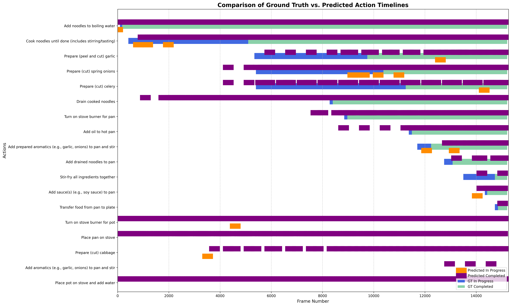

About This Research
This repository contains research on developing proactive robotic assistants capable of anticipating human needs and actions in complex, semi-structured environments. The project focuses on Human-Centric Digital Twins (HCDTs) that can predict human intent and generate corresponding 3D motion for enhanced human-robot collaboration.
Key Research Areas:
- Intent Prediction: Using AI foundation models to understand human intentions from multimodal cues
- Motion Generation: Creating physically plausible 3D human motion sequences based on predicted intent
- Context Awareness: Leveraging scene understanding and task knowledge for better predictions
- Modular Framework: Integrating pre-trained models for perception, reasoning, and motion synthesis
Technical Approach:
Our modular framework combines state-of-the-art components including:
- Vision-Language Models (VLMs) for scene understanding
- Large Language Models (LLMs) for high-level reasoning about tasks and intent
- Diffusion models for physics-aware human motion generation
- 3D pose estimation using SMPL-X representation
- Gaze tracking and attention analysis for intent cues
The system is designed to be particularly beneficial for Small and Medium Enterprises (SMEs) seeking adaptable human-robot collaboration solutions without requiring extensive end-to-end model retraining.
Project Results
Visualization of our prediction results and framework performance:
Demo Videos
Watch our project demonstration videos: